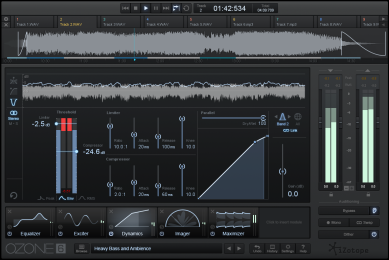

REVIEW: Ozone 6 and Ozone 6 Advanced by iZotope
Ozone 6 and Ozone 6 Advanced by iZotope
$249.99 (Ozone 6/MSRP); $999.99 (Ozone 6 Advanced/MSRP)
Purchase Ozone 6 and get more information at iZotope.com
I know, you see the word “Ozone”, that piece of software ubiquitous in conversations about mastering and mixing over the last decade or so, and you are probably thinking, “here we go with yet another revision…” and maybe you’ll wait to get it. I thought the same thing, too. But then I started working with it and now I want to go back and re-master all my music again, as if learning RX4 over the last few weeks wasn’t already enough. Obviously, I am a fan of iZotope’s products and have been using them nearly every day for at least the last six years, but Ozone 6 is such an advancement in already stellar technology that it warrants a full review on its own.
With a product like Ozone, the clarity and functionality let alone the ease of use, make this product worth a workout. And, if all that is not enough for you, iZotope provides comprehensive mastering guides and tips to their customers. Let’s face it, unless you are a full time mastering engineer, the process of mastering audio can be tricky and, for the untrained ear or even a skilled engineer, many opportunities could be missed while spinning your brilliant creation into audio gold.
Before you purchase, make sure you are aware of the differences between Ozone 6 and Ozone 6 Advanced.
General Overview
For the purpose of this article, I worked in Standalone mode (using the Advanced version), which has some nice advantages, especially when mixing an album or collection. For one, running this outside your DAW, you can devote all the computer’s available resources to mastering alone. This is especially helpful as you can load multiple tracks to master at the same time. They will appear in separate tabs so you can flip back and forth from one to another and retain the last position you were at on each track. I am cleaning up some old boom box recordings and, since multiple songs were recorded in the same session, they all have the same sound issues and I can clean them all together so they sound consistent.
A quick note on running Ozone 6 inside your DAW: it is possible to load just one of the modules at a time as a separate plugin without running the full version. This allows less CPU drainage and expands this product’s uses beyond just mastering your audio after mixing. If you have Ozone 6 Advanced, try the Dynamic EQ on your stereo drum mix!
In addition, with the ability to load in 3rd party plugins (or other iZotope plugins such as RX-4), having those system resources could really be the difference in the quality of the final master. This feature alone makes Ozone 6 the most versatile mastering system I have come across.
Interface
As expected, you have a transport control system at the top with a repeat feature that comes in very handy and optional play head. Under that is the waveform you’ll be working with. You can set a looping point if there is a specific area you would like to work on. On the right, you have input and output levels to manipulate with their own adjustable meter scale. There is also an auditioning section at the bottom including a bypass, a mono mode (many mastering engineers will tell you to audition in mono as you will hear things you’ll miss in stereo), a swap and a dither. At the bottom, you can select which modules you want to use (up to six) and in what order and even add in additional plugins. Each module icon has a meter so you can see how much impact each is having at any given time, even if you aren’t working with it at that moment. The modules run in order from left to right as your signal path so the order of the modules will have a distinct effect on the mastering process. There is even a lengthy and adjustable Undo history available if you’ve gone too far with changes. I can’t recall a historic feature in any program I have worked on where I could specifically mark points in time, but you can do that here.
Since each module has a dedicated power button, if you hear a noise or sound but cannot figure out where it is coming from, you can turn on and off the modules in any combination to assist in isolating that annoying little bugger. Keep in mind that it may be a combination of modules in the process so shutting them down right to left, one at a time, seems like a good place to start.
A sweet additional feature is the ability to create fade-ins and fade-outs. This means you still have some flexibility without having to export your master again, allowing you additional time before you have to make that final decision. Since all the songs are in one place and, presumably, you’ve loaded them in the order they will appear on the album, you can get a feel for how one song moves into another and set your fades accordingly while trimming off noise at the beginning or end of each track.
Even the meters are more functional since you can switch them between standard left/right metering and mid/side metering. Perfect for those times when you adjust the EQ view to mid/side. They also have a vast variety of viewing options.
Equalizer
This is one of my favorite modules and, most likely, the one you are going to spend the majority of your time perfecting and will be the basis of any additional modules you use. I suggest this as the first module in the chain (but always open to other ideas). With 8 bands to work with in 3 different viewing modes, you have just about all the flexibility you could ever want. Intelligent color coding allows you to make adjustment decisions quickly. Even using 2 bands to immediately put on a high and low pass filter (which is the first thing I tend to do when mastering audio), you still have 6 for more fine tuning or frequency minimizing/maximizing, which you can power off for quick and easy monitoring of the other bands and what affect they are having on your mix. As if that were not enough, you have all kinds of curve options at your disposal.
If you are unsure where to start, Ozone 6 and Ozone 6 Advanced come with a huge selection of templates. I often make templates based on instrumentation I use repeatedly or per film project or even per theme. Most experienced mastering engineers I speak with like to start from scratch each time. For us film composers, we tend to work under some pretty crazy deadlines so I find templates work a bit better for me in a pinch. You can always modify the layout to suit your specific needs for that piece of audio. In fact, it would be nearly impossible to find a template that worked 100% as is but it may help narrow down what you need to do. You don’t even have to make this decision at the beginning. You can change to a template at any time and hit Undo to go back if you want to compare.
Digital mode versus analog mode: You have the option to switch between the two. Since this is not a physical equalizer hooked up to your sound card through cables, the analog equalization is created via modeling. This option helps you identify differences in phasing as well as give you more control options. The digital mode also allows you access to surgical mode, which allows you even more precision in isolating and changing frequency issues.
With EQ matching, you have one of the greatest features I have ever heard of. You can actually sample the EQ model of a piece you like and imprint it onto another piece. This has been greatly simplified since Ozone 5. I haven’t played with this a great deal just yet because there are so many variables but I could see this being especially useful on a mix you want to duplicate to a series of other tracks such as my boom box recording cleanup project or mastering an album or collection of songs or even as a learning tool to see how commercially released songs were EQ’d.
The Advanced version has 2 additional choices for equalization: Dynamic EQ and the Post Equalizer. You can use these individually or in line with each other to really narrow down frequency issues. If you need more than 6 modules to utilize these, export out what you have so far and start a new session with the additional modules but keep in mind, everything that you did to modify your mix thus far is baked in like sugar into a cookie.
can use these individually or in line with each other to really narrow down frequency issues. If you need more than 6 modules to utilize these, export out what you have so far and start a new session with the additional modules but keep in mind, everything that you did to modify your mix thus far is baked in like sugar into a cookie.
The Dynamic EQ responds differently than a Static EQ. A Static Equalizer will respond exactly the same regardless of the incoming volume of the signal. The Dynamic Equalizer responds based on the volume of the frequencies, allowing you to keep the integrity of the overall sound and boost or cut where you need to. In addition, there is a threshold setting for maximum output. I find a multi-band equalizer like this especially useful more on the individual track, such as a mixed drum track that needs some cleanup to bring out more punch in the kick drum or a bit more snap in the snare. You can accomplish that all in one pass.
The Post EQ basically duplicates the main equalizer. The advantage of this is that since you cannot load a module more than one time per instance, you can add this in as a second EQ in case you want to make additional adjustments after another process has run in the signal path.
With 8 bands, 3 viewing modes, 5 band settings with several setting choices each, multiple monitoring options, and accurate visual representations of what is happening at that precise second with your audio and much, much more, I would be hard pressed to find an equalizer that would match it.
Dynamics
This is where you will find your compressor and limiter, each having 4 bands. I’ve heard so many engineers talking about how the middle range needs the most compression in many types of music. Get ready for this cool feature, folks! You have the ability to make adjustments in the middle separate from the sides. This is another one of my favorite features in Ozone 6. If you are more comfortable, you can continue to work in stereo but the mid/side option allows you to get the sound you want from 3 different angles without each one being too affected by the other.
This module is laid out with an intelligent process flow from left to right. For most of you, I would imagine you are at least familiar with the recording process and this compressor and limiter work exactly the same as you would expect, including a variable knee setting. You have the same full control you did in the equalization process with being able to bypass different sections at any time so you can hear the effect of a specific setting or group of settings.
The difference is the flexibility. You can switch from multiband to parallel. You can link controls for quick band setting. You can change views for ultimate accuracy. You can listen in stereo or mid/side. You can switch from analog to digital or even hybrid. You can set the bands so there is no crossover at all. If you over compress the signal and the overall volume gets too quiet, you can press the Auto button, which will automatically adjust the gain to give your signal some volume back.
The detection filter allows you to take frequencies and tell the compressor to ignore them. In other words, if your base frequency starts at 20 and you want to avoid anything under 100 being compressed, you can set the filter to start at 100, letting more of that low end through. You can also adjust the curve to decide where and how hard to compress.
Imager
While I have wanted to start every section of this review with, “This is one of the most important components of mastering audio…” I saved it for this. Quite honestly, this is one of the most important components of mastering audio. Here, you have the opportunity to bring out the depth of your creation. I hope you remembered to leave some head room when you ran through the limiter. If not, go back and adjust that now and then double check all your modules between the limiter and here. That one change could have an effect on any component in the signal chain.
The visual meter is a great help with phasing. If the signal is in the middle, you are pretty safe. If you go too far to the sides, you may want to double check your sound and make sure things are not too crazy. There is even a balance indicator to help you keep your mix well panned and a vertical indicator to keep you aware of phasing issues.
When you used the limiter to boost the volume, you filled in some of the spectrum but the Imager will take it the rest of the way by widening it. You can also squeeze it as well in areas it may already be too wide. By the time you are done with this part of the process, your mix should sound rich and full and need only that final boost (unless you choose to process in a different order than I have in this example. There is no clear rule for this because there are so many variables and styles). Play around with this one a bit and really get a feel for what it can do.
Maximizer
Here is where you put the final touches and volume on your music. Be careful here not to clip audio anywhere while getting the most out of your levels. If you find a spot that clips, you can isolate it and work on just that spot or go back to an earlier module in the chain to fix it (remember to check everything that followed).
This is far more intense than it appears. Threshold and ceiling levels will be the determining factors in your final output, whether it is headed to a film, to radio or even a CD. You can control things such as the speed of the reaction and determine the final transient emphasis. These things can make the biggest difference in what your audience hears.
Insight
(Ozone Advanced 6 only)
This might just be the coolest feature yet. This is run as an additional plugin (but counts as one of the 6 modules) that is solely dedicated to metering. Wonder if the overall mix is too loud or could be louder? This is the plugin for you. It includes True Peak Meters, Loudness Meters, Loudness History, Graph, Stereo Vectorscope, Surround Scope 2D/3D Spectrogram and Spectrum Analyzer. That is a lot in this one little plugin! Perfect for an additional set of digital eyes looking at your levels. Since this is opened as a separate plugin and not a module (while using one of the module slots), you can set this window off to the side while you work with the other modules, keeping this in full view.
One of the best features is that there are very helpful presets here for specific applications in broadcast and media. These are great for helping you stick to those important guidelines.
I would probably spend the extra cash just for this plugin alone and go for the Advanced version. At a current retail of $499.00 for Insight, that almost gets you there anyway.
Time to export you audio and start listening to it everywhere you can but, first, give your ears a rest, and maybe a good night’s sleep. Job well done!
Final Observations
I have heard and seen some complaints about the differences between Ozone 5 and Ozone 6, specifically, the removal of the mastering reverb. I would imagine different mastering engineers will tell you different things, but it should be rare you would need this. Effects should be set before mastering begins. That being said, if you find your overall sound does need a touch more reverb, you do have the ability to add in 3rd party plugins, so it’s really not that big a deal. If you have upgraded from Ozone 5, you may even try loading that into one of the six positions available or any other plugin you have on your system.
When loading in multiple songs to master together, changes made to any module affect that track only and do not copy universally to all other tracks. While this can be an advantage, there is no option to modify the process. Let’s take my boom box recording example. I have five songs I am cleaning at the same time. If I dial in a sweet EQ setting and want to apply that to the hiss I hear on all tracks, I have to go into each track and do it manually, save as a preset (that you may never use on another project) or try EQ matching (which would be a bit laborious for this process). I would love to see something a little more flexible, such as a switch that allows you to turn or off an “Effect All Tracks” option. However, this may just be a feature for me but I would think there is potential for others as well.
Additional Notes
- One thing I noticed is that some of the options come up initially powered off and you have to switch them on. A good example is in the Imager, the Stereoizer needs to be manually turned on to be used. With the Equalizer, you only start with 1, 3, 5 and 7. You need to power up 2, 4, 6 and 8 to use them. Keep an eye open for this so you have everything running that you want running.
- When working with the equalizers, remember that the dither is only for monitoring. When you export the audio (if in Stand Alone mode), check the Dither box to create that function. Check settings in your DAW when you bounce tracks if you would like the Dither feature to work.
In closing, iZotope’s Ozone 6 Advanced is one of the most comprehensive and powerful pieces of software I have ever worked with. It is extensive in ways that very few pieces of audio software are — I have really only scratched the surface of what this beast can truly do. Just in the first couple settings, I was able to make substantial improvements to my music with very little effort and all within the confines of one program. There are so many more little details, this article could have been 5 times as long had I covered them all.
Since iZotope is known to make changes based on user feedback, I would imagine there is a good chance there may be an update in the future. If so, I can’t wait to see what more they could possibly do to enhance the value or functionality of this mastering suite.
Want to give it a spin? Free 10-day trials of both Ozone 6 and Ozone 6 Advanced are available on the iZotope website. Check them out!
Ozone 6 and Ozone 6 Advanced by iZotope
$249.99 (Ozone 6/MSRP); $999.99 (Ozone 6 Advanced/MSRP)
Purchase Ozone 6 and get more information at iZotope.com
Ozone 6 by iZotope
User Interface - 100%
Simplicity/Ease of Use - 90%
Sound Quality - 100%
Price Value - 100%
98%
iZotope's flagship comprehensive mastering suite produces incredibly impressive results and may be the answer to DIY mastering you've been looking for.
Scott Haskin
Scott K. Haskin is an award-winning Los Angeles-based visual media composer and author of the book, "Becoming an Indie Film Composer". As a songwriter and producer, Scott has placed numerous radio spots and has released two top-selling meditation album projects. Since 2014, Scott has produced the SCOREcast Podcast Show at SCOREcastOnline.com.


No Trackbacks.